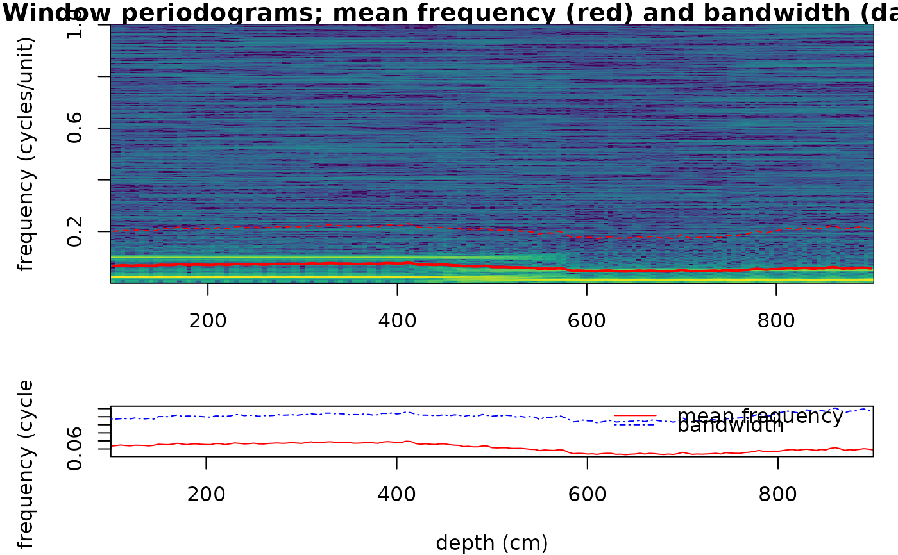
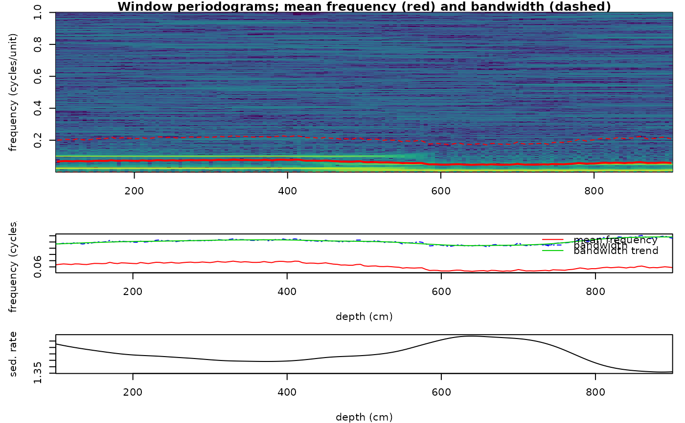
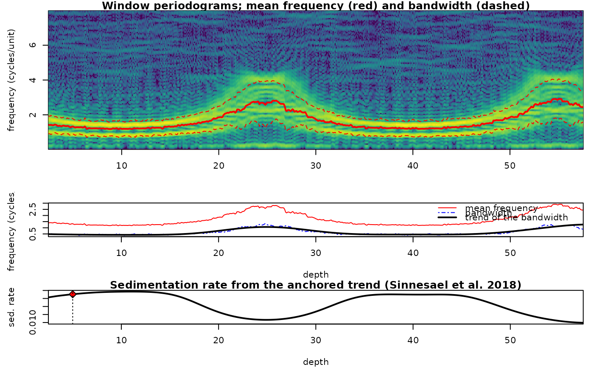

Sliding-window spectral moments (mean frequency and bandwidth)
Source:R/spectral_moments.R
spectral_moments.RdThe spectral_moments function calculates the
first two spectral moments, the mean frequency (\(\mu_f\)) and the
bandwidth (\(B\)), of a uniformly sampled series in a sliding window
(Sinnesael et al., 2018). Because both moments scale with the
sedimentation rate, their evolution along a stratigraphic series can be
used to detect changes in sedimentation rate.
Within every window the (globally mean-centred) segment is linearly detrended, its one-sided rectangular-window periodogram is computed on an even NFFT grid from DC up to the Nyquist frequency and $$\mu_f = \sum f P(f) / \sum P(f), \quad B = \sqrt{\sum (f-\mu_f)^2 P(f) / \sum P(f)}$$ are calculated.
Two computational paths are available, mirroring the Acycle GUI (SpectralMomentsGUI.m):
the strict deterministic core (default; used whenever
sr_mean=NULLandedge_paddingis"none"or"zero"). Translated from Acycle v3.1 acycleSpectralMoments.m (Mingsong Li). The window length is rounded (half away from zero) to an integer number of sampling intervals, the step to an integer number of samples, NFFT =padx window samples (+1 if odd), and window centres are the midpoints of the actual window coordinates.the legacy path (used when
sr_meanis given or whenedge_paddingis"mirror"or"mean"). Translated from Acycle v3.1 spectralmoments.m and zeropad2.m (Mingsong Li, based on SpectralMoments_with_SR_estimation.m and DetrendSignalPP.m by Matthias Sinnesael). Whensr_meanis given the long-term bandwidth trend is estimated with the overlap-add polynomial baseline model of DetrendSignalPP.m (Acycle's 'poly' option) and converted into a relative sedimentation-rate curve scaled tosr_mean(\(sr = sr_{mean} B_1 / B_{trend}\), re-centred onsr_mean). As in Acycle, the trend window isround(window/step_samples)bandwidth values, i.e.windowexpressed in the unit of the depth column is used as a number of samples, so the smoothing depends on the depth unit.
Usage
spectral_moments(
data = NULL,
window = NULL,
step = NULL,
pad = 5,
edge_padding = "none",
sr_mean = NULL,
freq_range = NULL,
noise_floor = FALSE,
anchor = NULL,
moment = c("bandwidth", "mean_frequency"),
trend = c("poly", "lowess"),
trend_window = NULL,
trend_order = 2,
genplot = FALSE,
verbose = FALSE
)Arguments
- data
Uniformly sampled record (required): matrix or data frame with depth or time in column 1 (strictly increasing, all values finite) and the proxy in column 2; at least three rows.
Default=NULL.- window
Length of the running window, in the unit of the first column of
data(numeric, > 0). In the strict core it is rounded to an integer number of sampling intervals.NULLuses 25% of the record length (the Acycle GUI default).Default=NULL.- step
Step of the running window, in the unit of the first column (numeric, > 0); rounded to an integer number of samples in the strict core.
NULLuses the median sampling interval.Default=NULL.- pad
Zero-padding factor of the periodogram (numeric, >= 1): NFFT is
padtimes the number of samples in a window (+1 if odd). Larger values give a finer frequency grid.Default=5.- edge_padding
Padding of the record edges by half a window (character, case-insensitive):
"none"or"zero"(zeros; strict core),"mirror"(mirrored data) or"mean"(the mean value) (both use the legacy path, as in the Acycle GUI).Default="none".- sr_mean
Mean sedimentation rate (numeric, e.g. in cm/kyr). When given the legacy path is used and the bandwidth trend and an Acycle-style sedimentation rate curve scaled to
sr_meanare returned;NULLcomputes the moments only.Default=NULL.- freq_range
Frequency band over which the moments are taken, in cycles per depth unit (numeric vector
c(lower, upper));NULLuses the whole spectrum up to the Nyquist frequency, as in the paper. The moments of a record with white noise are biased towards the cutoff frequency (section 2.3.3 of the paper), so a band around the astronomical lines makes them follow the sedimentation rate rather than the noise.Default=NULL.- noise_floor
Subtract the median of every window's periodogram (an estimate of the white-noise floor) before the moments are taken; negative values are set to zero (logical). In the synthetic test of the examples (precession, obliquity, eccentricity, white noise 0.3 times the signal, rate varying 1-3 cm/kyr, Nyquist 25 cycles/m) the anchored bandwidth trend correlates 0.00 with the true rate over the whole spectrum (the noise plateau up to the Nyquist frequency dominates the second moment), 0.97 over
freq_range = c(0.1, 8), and 0.99 with the floor removed as well (91 % of the record within 20 %); the mean frequency is less sensitive (0.98 over the whole spectrum).Default=FALSE.- anchor
Anchor point that turns the smoothed trend of the moment into a sedimentation rate curve, as in Sinnesael et al. (2018): every spatial frequency, and so every moment, scales with 1 / sedimentation rate (their equation 12). Give either a numeric vector
c(depth, period_kyr, frequency)(the component with periodperiod_kyrsits atfrequencycycles per depth unit atdepth, so the rate there is1 / (period_kyr * frequency)), orlist(depth = , rate = )with the rate in depth units per kyr. The result then holdsmoment_trendandsedrate_anchored. This is the procedure of the paper (U1437: the 0.45 cycle/m precession line read as 21 kyr; ODP 982 and the synthetic insolation: the obliquity line at the top of the record), as opposed to the Acyclesr_meanpath, which rescales by the first raw bandwidth value and re-centres the curve additively on a mean rate.NULLgives no anchored rate.Default=NULL.- moment
Which moment carries the sedimentation rate when
anchoris given (character):"bandwidth"(the paper's choice, less sensitive to the noise bias than the mean frequency) or"mean_frequency".Default=c("bandwidth", "mean_frequency"), i.e."bandwidth".- trend
Smoothing of the moment before anchoring (character):
"poly"(the overlap-add polynomial baseline of Verhelst 2000 used in the paper; falls back to lowess when the trend window is not shorter than the series) or"lowess"(lowesswith spantrend_window/ record length).Default=c("poly", "lowess"), i.e."poly".- trend_window
Length of the smoothing window of the trend, in depth units (numeric, > 0); only used with
anchor. The paper takes a long-term trend: the result is the first-order change of the rate, not its detail.NULLuses three analysis windows (3 * window).Default=NULL.- trend_order
Polynomial order of the
"poly"baseline (integer, >= 0).Default=2.- genplot
Plot the result with
plot_spectral_moments(logical).Default=FALSE.- verbose
Show a progress bar (logical, TRUE or FALSE).
Default=FALSE.
Value
A list with elements
result: matrix with columnsdepth(window centre),mean_frequency,bandwidthand, whensr_meanwas given,bandwidth_trendandsedrate.method:"strict"or"legacy".meta: list with the effective settings (sampling interval, window/step in samples and physical units, NFFT, padding, Nyquist, number of windows).with
anchor:resultalso holdsmoment_trendandsedrate_anchored, andanchorrecords the anchor used.spectra: the periodogram of every window (frequency,depthof the window centres,powermatrix frequency x window), the evolutive spectrum thatplot_spectral_momentsdraws as an image with the two moments on top.
References
Sinnesael, M., Zivanovic, M., De Vleeschouwer, D., Claeys, P. (2018). Spectral moments in cyclostratigraphy: advantages and disadvantages compared to more classic approaches. Paleoceanography and Paleoclimatology, 33, 493-510. <doi:10.1029/2017PA003293>
Li, M., Hinnov, L., Kump, L. (2019). Acycle: Time-series analysis software for paleoclimate research and education. Computers & Geosciences, 127, 12-22. <doi:10.1016/j.cageo.2019.02.011>
Author
Michiel Arts (R translation); original MATLAB code: Mingsong Li (Acycle), Matthias Sinnesael (spectral moments and DetrendSignalPP), Milan Zivanovic.
Examples
# \donttest{
# Two cycles (40 and 10 cm period in "age" units) recorded with a
# sedimentation rate that doubles halfway the record (depth in cm): the
# mean frequency halves in the upper part.
dt <- 0.5
depth <- seq(0, 1000, by = dt)
age <- ifelse(depth <= 500, depth, 500 + (depth - 500) / 2)
set.seed(1)
proxy <- sin(2 * pi * age / 40) + 0.5 * sin(2 * pi * age / 10) +
stats::rnorm(length(depth), sd = 0.2)
sm <- spectral_moments(data = cbind(depth, proxy), window = 200,
step = 5, pad = 5, genplot = FALSE)
plot_spectral_moments(sm, x_lab = "depth (cm)")

# with a sedimentation-rate estimate (legacy path, 'poly' trend)
sm_sr <- spectral_moments(data = cbind(depth, proxy), window = 200,
step = 5, pad = 5, sr_mean = 1.5)
plot_spectral_moments(sm_sr, x_lab = "depth (cm)")

# the sedimentation rate of Sinnesael et al. (2018): the obliquity line is identified at
# 5 m (41 kyr at f_obl cycles/m), the bandwidth trend is anchored there; moments over a band
set.seed(3)
t <- seq(0, 3000, 0.5)
x <- 0.8 * sin(2 * pi * t / 41) + sin(2 * pi * t / 23.7) + 0.5 * sin(2 * pi * t / 405) +
0.3 * rnorm(length(t))
rate <- 0.02 + 0.01 * sin(2 * pi * t / 1500)
z <- cumsum(c(0, rate[-1] * diff(t)))
zg <- seq(0, max(z), 0.02)
d <- data.frame(zg, approx(z, x, zg)$y)
f_obl <- 1 / (41 * approx(z, rate, 5)$y) # the obliquity line at 5 m depth
sm <- spectral_moments(d, window = 5, step = 0.1, anchor = c(5, 41, f_obl),
freq_range = c(0.1, 8), noise_floor = TRUE)
plot_spectral_moments(sm, freq_max = 8)

# }